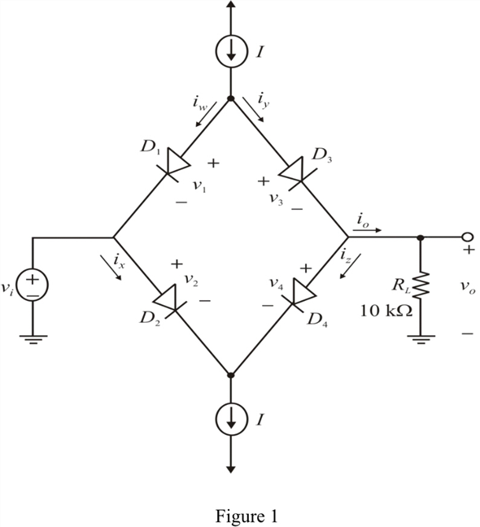
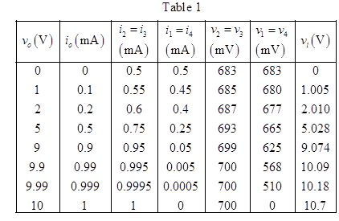
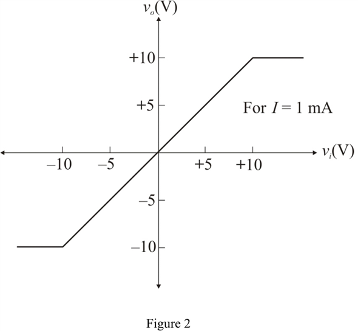
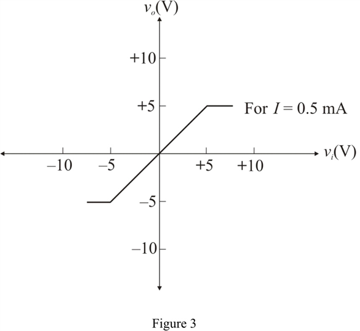

Step 1:
Refer to Figure P4.49 in the text book.
Redraw the circuit is shown in Figure 1.

Step 2:
The current flowing through the constant-current source is, .
Each of the diode has a voltage drop of , at a diode current of .
Equation for the diode current is,
…… (1)
Because of circuit symmetry same results will occur in positive and negative portion of the input.
Consider that are currents in a diode and the corresponding voltages across the diode are .
Now by using diode current equation we obtain,
…… (2)
Step 3:
Substitute , , and in equation (2).
…… (3)
From the circuit shown in Figure 2, the relation between currents are,
Step 4:
For :
Current flowing through the load is,
Step 5:
All the diodes are identical. So Current through the each diode is same.
Current passing through the diode D1 is,
Current passing through the diode D2 is,
Current passing through the diode D3 is,
Current passing through the diode D4 is,
Substitute in equation (3).

Here is each diode drop when the output voltage is zero.
Step 6:
By applying Kirchhoff’s voltage law to the circuit shown in Figure 1.
Thus, the input voltage is .
Step 7:
For :
Current flowing through the load is,
Circuit is symmetry, so the currents are,
So the current through the D3 is same as D2.
Step 8:
Similarly the currents through the diode D1 is,
The current through the diode D3 is,

Step 9:
Substitute in equation (3).
Therefore, the diode drops and .
Step 10:
Substitute in equation (3).
Therefore, the diode drops and .
Step 11:
Apply Kirchhoff’s voltage law to the circuit shown in Figure 1.
Thus, for , the input voltage is, .
Step 12:
For :
Current flowing through the load is,
Circuit is symmetry, so the currents are,

For  :
:
Current flowing through the load is,
Circuit is symmetry, so the currents are,
So the current through the D3 is same as D2.
Step 13:
Similarly the currents through the diode D1 is,
The current through the diode D3 is,
Step 14:
Substitute in equation (3).
Therefore, the diode drops and .
Step 15:
Substitute in equation (3).
Therefore, the diode drops and .
Step 16:
By applying Kirchhoff’s voltage law to the circuit shown in Figure 1.
Thus, the input voltage is, .
Step 17:
Similarly we can find the other values in positive side.
All values in positive side shown in Table 1.

Step 18:
For output voltage, greater than given circuit is not operate properly. This is limited by current source.
Thus, the possible maximum positive and negative output voltage amplitudes are .
Step 19:
In another word, for , output voltage amplitude is constant at respectively.
Voltage transfer characteristics plot for current source is shown in Figure 2.

Step 20:
Voltage transfer characteristics plot for  source current is shown in Figure 3.
source current is shown in Figure 3.
